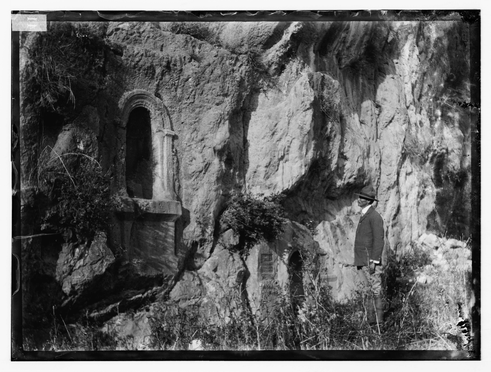

Caesarea Philippi (Banias)

- Find Name
- Caesarea Philippi (Banias)
- Description
- The city at the south-west foot of Mount Hermon, beside one of the main springs feeding the Jordan, where a limestone cliff and cave formed the sanctuary of Pan (Paneas, hence Arabic Banias). Herod the Great built a temple to Augustus there; his son Philip the Tetrarch rebuilt the town as his capital from about 2 BC and named it Caesarea in Augustus's honour, distinguished as Caesarea Philippi. Excavations have exposed the sanctuary terraces and niches along the cliff, a Roman city with basalt-paved streets, and later shrines. The Gospels place Peter's confession in its district (Matthew 16:13) and its villages (Mark 8:27).
- Historical Period
- Hellenistic–Roman
- Evidence Class
- Contextual
- Interpretations
- The city's identity and its district as the confession's setting are secure. Two things are not claimed: the exact spot where Jesus spoke (Matthew says 'district', Mark says 'villages'), and the identification of any single visible cave-side ruin as Herod's Augusteum, which recent excavation has challenged. The Transfiguration's mountain is also not located here by this entry; tradition since the 4th century places it on Mount Tabor, and the Gospels do not name the mountain.
- Alternative Names
- Paneas; Panias; Banias; Neronias (under Agrippa II)
- Related Places
- Related Books
- Related People
- Scripture Illuminated
- Biblical Significance
- In the district of this city — a place of Pan's cave, imperial temples and competing gods — Peter said, 'Thou art the Christ, the Son of the living God' (Matthew 16:16), and Jesus first told the Twelve plainly that He would suffer, die and rise. The confession gains its edge from its setting: the church's foundation stone was named where other gods already had their shrines, and the 'gates of hell' of Matthew 16:18 were, in that landscape, not an abstraction.
- Artifact Date
- c. 3rd century BC (Paneas sanctuary origins) - Roman city from c. 2 BC (Philip's refoundation)
- Current Location
- In situ, Banias Nature Reserve, Golan Heights
- Date Discovered
- Excavations from the 1980s (Banias; city, sanctuary terraces and streets)
- Discovery Location
- Banias, foot of Mount Hermon, Golan Heights
- Timeline Era
- Life of Christ
Awaiting Review Not yet checked against scholarly sources. Treat its claims as provisional until this entry is reviewed. About verification
Last reviewed: not yet reviewed